己丑日
 进补
进补仲冬｜节气｜ 大雪 ｜时间｜ 十二月七日至十二月廿二日
今年大雪需特别注意的健康问题：气管炎、盗汗、咽干、面色发黄、腰椎病、关节炎
原料：大枣、甘草、葱白连须、鱼腥茶嫩尖茶。
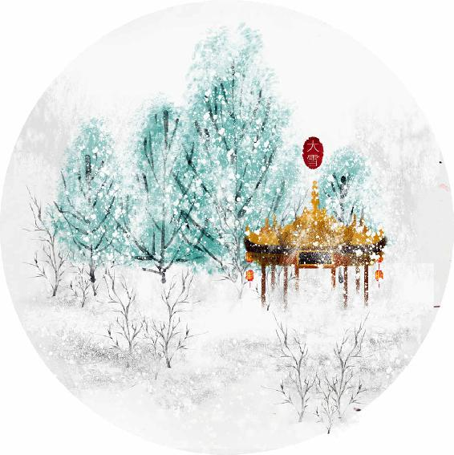
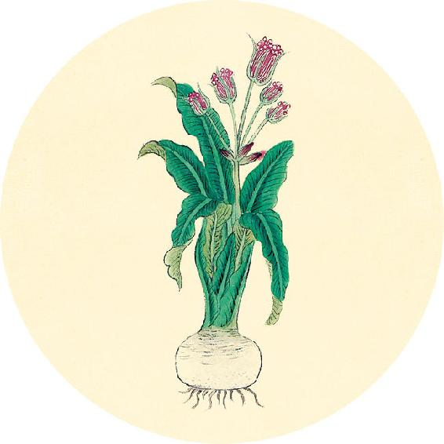
健康提示
节气食方一：银耳羹（从秋分吃到立春）
节气食方二：莲杞顺时粥（做法见11月23日）
节气食方三：墨鱼汤
大雪节气的养生功课：补肾精。
今年大雪的特殊养生要点——
从现在开始进入一年中最容易出现大病的一个月，最好是安心静养，不要给心脏增加负担，注意防寒湿，保护好腰背关节。
保养重点：小肠、腰腹。
容易出现的问题：气管炎、盗汗、咽干、面色发黄、腰椎病、关节炎。
【释义】冬天误刺了春天的部位，病不能愈，使人困倦却睡不着，即使睡着了，也会多梦。
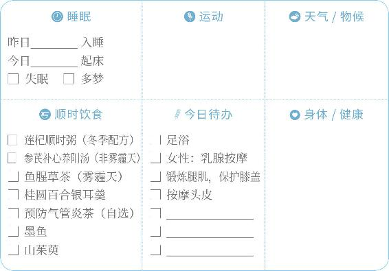
进补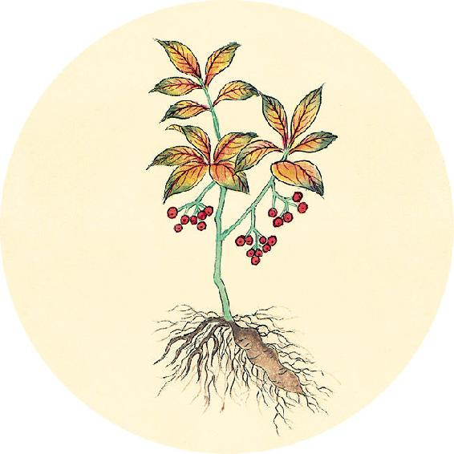
二十四节气茶养生
今年大雪节气品茶推荐：预防气管炎茶。
预防气管炎茶
原料：大枣3个、甘草2克、葱白连须3根（大葱）或6根（小葱）、鱼腥茶嫩尖茶10克。
做法：
1. 将红枣掰开，与甘草、葱白连须一起水煮十分钟。
2. 滤出汤汁，用于冲泡鱼腥草嫩尖茶，两分钟即可饮用。
功效：冬季经常发作咳嗽、气管炎的人，可以提前喝这道茶饮来预防。每日1～2次。
冬刺夏分，病不愈，气上发为诸痹。
——黄帝内经·素问·诊要经终论

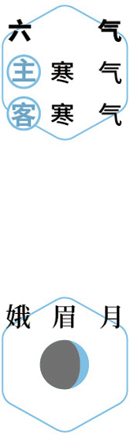
养藏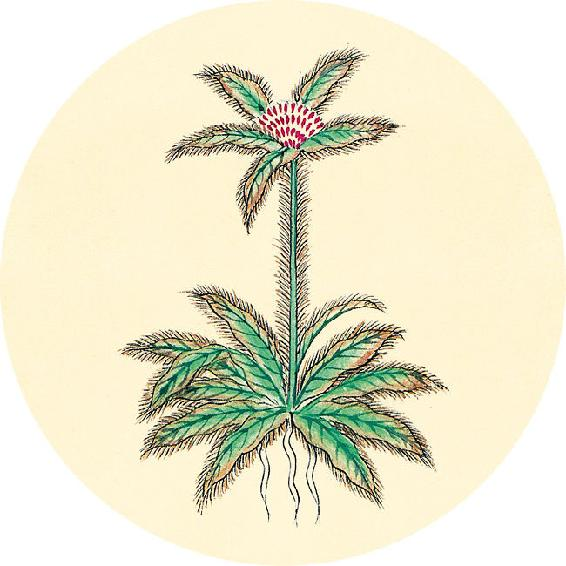
健康提示
从大雪开始进入冬天的第二个月——仲冬。这个月阳气最弱。
养生关键词：补肾养心。
上半月的重点是全面补肾，下半月的重点是养护心阳。
仲冬是一年中最可以大补的一个月。阳气不足的人，可以通过泡脚、热敷、灸贴等外治养生法，祛除寒气，舒通气血。
【释义】冬天误刺了夏天的部位，病不能愈，使人气上逆，会发为各种痹证。
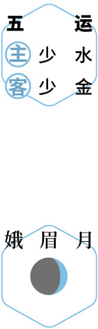
防霾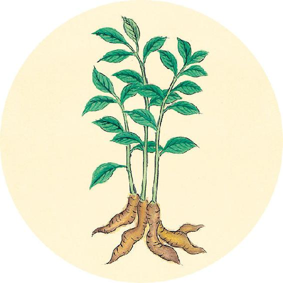
健康提示
2020年，在对感染新冠肺炎患者的治疗中发现，吸烟者发展为重症危重症的风险更高。
戒烟和远离二手烟，也能有效降低心肌梗死致死的风险。
烟民的食疗方
1. 解烟毒：鱼腥草茶。
2. 咽干：百合炖银耳、莼菜蜂蜜饮。
3. 咽炎：加味果菊清饮（配方见3月30日）。
冬刺秋分，病不已，令人善渴。
——黄帝内经·素问·诊要经终论
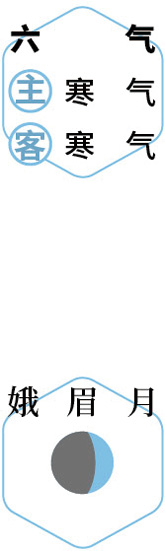
防病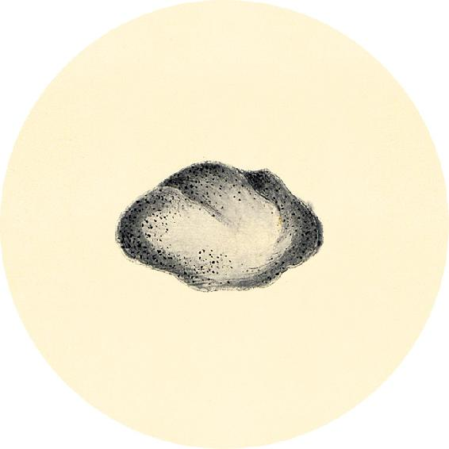
一候反思
入冬以来是否发生过。
重感冒 □ 是 □ 否
咳嗽 □ 是 □ 否
哮喘 □ 是 □ 否
慢性支气管炎 □ 是 □ 否
湿疹 □ 是 □ 否
关节炎 □ 是 □ 否
1. 任何一个答“是”，在明年（2022年）日历书的入伏页的选项“三伏做加强贴”那里打钩。
2. 翻到12月25日，记录今天的自查一共有几个“是”。
【释义】冬天误刺了秋天的部位，病不能愈，使人常常口渴。
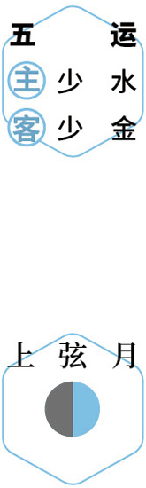
冬病夏治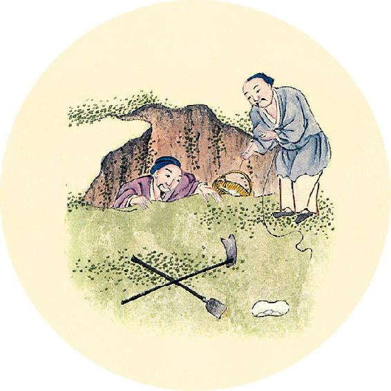
健康提示
散结祛斑茶
原料：青皮子3克或四花青皮1个、陈皮1～2个、红糖适量。
做法：沸水冲泡或煮水饮用。
功效：调理黄褐斑、乳腺增生、子宫肌瘤、卵巢囊肿。
注意：孕妇慎用或遵医嘱。
以上问题同时具备的女性，加红橘叶1把，一起煮水效果更佳。冬季红橘上市，食用时可以收集橘子叶晒干备用。
凡刺胸腹者，必避五藏。中心者环死，中脾者五日死，中肾者七日死，中肺者五日死。中膈者，皆为伤中，其病虽愈，不过一岁必死。
——黄帝内经·素问·诊要经终论
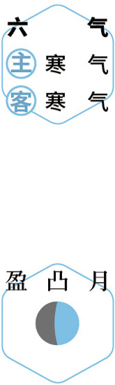
居家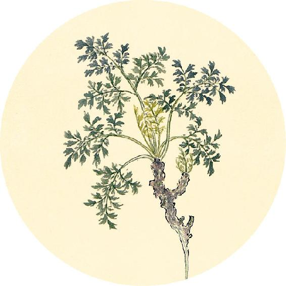
健康提示
陈皮与青皮的区别（上）
陈皮是成熟红橘的果皮，药性和缓，既可入药，也可泡茶、煲汤、做调料，不分老幼大多数人都适用。
青皮是红橘的幼果晒干（直径2.5厘米以上称为个青皮，更小的称为青皮子）或剥取未成熟果实的果皮（皮为青色）制成，药性迅猛，只能入药，气虚的人不宜久服。
【释义】凡在胸腹用针的时候，必须避开五脏。假如刺中心，十二个时辰之内会死；假如刺中脾，五日内死；假如刺中肾，七日内死；假如刺中肺，五日内死；刺中胸膈，都会伤及内脏，就算当时能好，不出一年也会死。
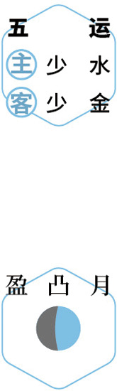
闲养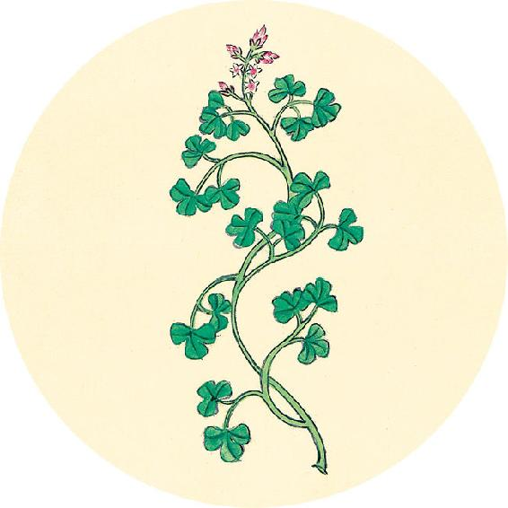
健康提示
陈皮与青皮的区别（下）
陈皮的功效：祛湿，健脾，理气，化痰止咳，辅助药性，广泛用于各种疾病及日常保健。
青皮的功效：祛斑，化肿块，破气，消积滞，用于肝郁气滞、肝胃不和、食积胃痛、黄褐斑，以及各种囊肿、肌瘤、增生。
“陈皮治高”，主升浮，调理人体上部问题；“青皮治低”，主沉降，调理人体下部问题。
刺避五藏者，知逆从也。所谓从者，膈与脾肾之处，不知者反之。
——黄帝内经·素问·诊要经终论
煮梅汤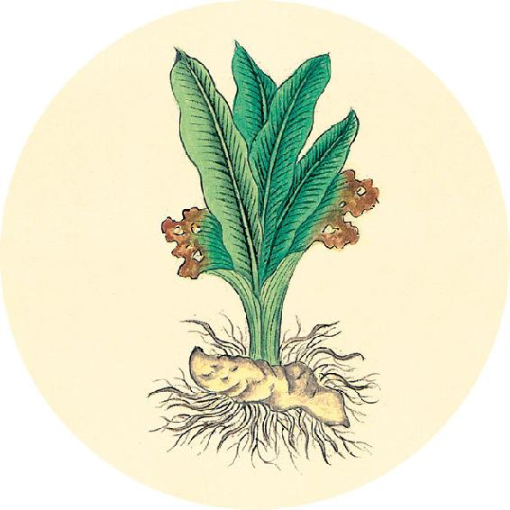
健康提示
青皮善于散结，化人体内部的肿块，还有抗休克的作用，效果虽好，却不宜久服，服用一段时间需补气，防止气虚。
体弱的人也可通过贴身佩戴的方法来起到温和的保健作用。青皮子香气芳香清冽，经久不散，可以用线穿起来，戴在手腕或胸前，经常嗅闻其香气，可以芳香化浊、疏肝理气，缓解压力。
【释义】刺胸腹避开五脏的关键，是要懂得下针的顺逆。所谓“顺”，就是知道膈与脾肾等五脏的部位；如不知其部位，就很容易刺伤五脏，这就叫作“逆”。
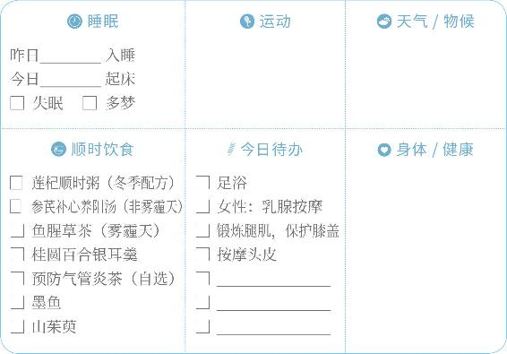
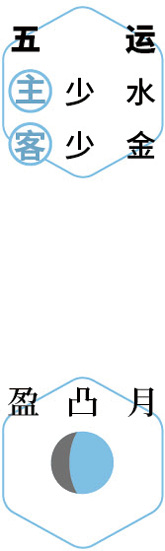
赏味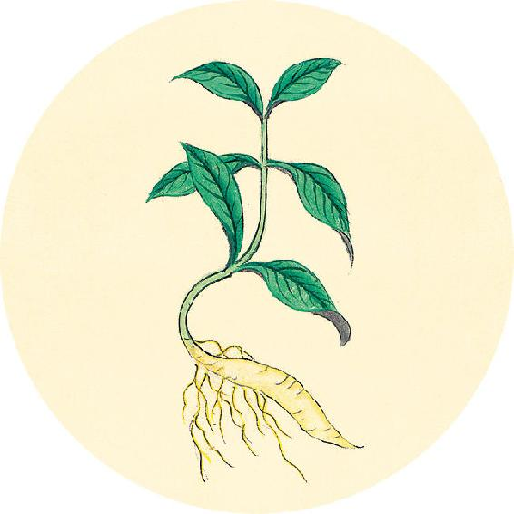
二候反思
是否有如下情况：
长期精神紧张 □ 是 □ 否
经常情绪激动 □ 是 □ 否
多次人工流产 □ 是 □ 否
长期服用含雌激素的保健品、避孕药 □ 是 □ 否
这些因素都会引发和加重乳腺增生。（调理方法见12月17日。）
刺胸腹者，必以布憿（jiǎo）著之，乃从单布上刺，刺之不愈复刺。
——黄帝内经·素问·诊要经终论
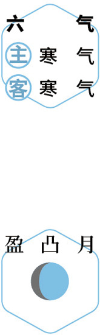
查病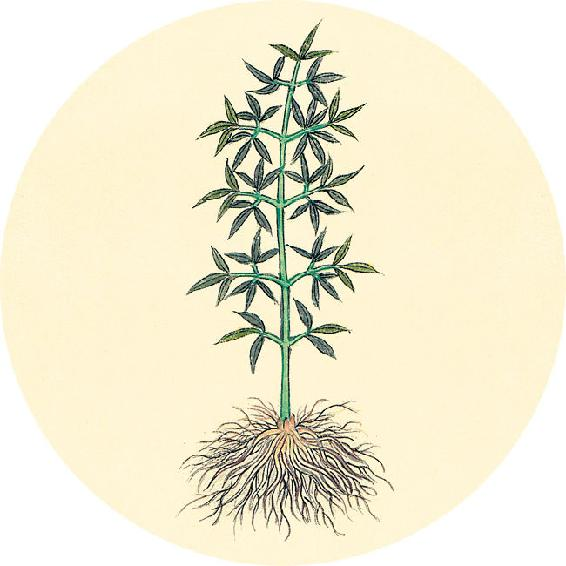
健康提示
如何通过按摩预防乳腺疾病？
方法一：先在胸部涂抹一层护理霜，然后用手或经络梳从外侧由外向里，由下往上梳理（每天10分钟）。
方法二：“刷骨头”。沿着腋下肋骨往内梳理，找到乳房里的肿块或者结节后，按摩它的周围。
方法三：按揉胸口的膻中穴，用刮痧工具或大拇指的关节按压，按时会比较疼，按后可能出现瘀青，可以贴一个清温手心贴（见11月1日）来活血化瘀。
【释义】剌胸腹部位的时候，应该先用布缠住胸腹，然后从单布上进针。如果剌后，不见病愈，可以再刺，这样就不容易刺伤五脏。
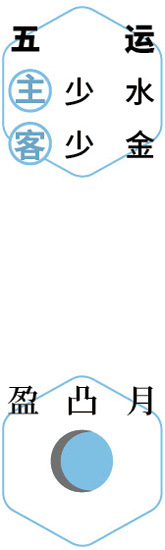
按摩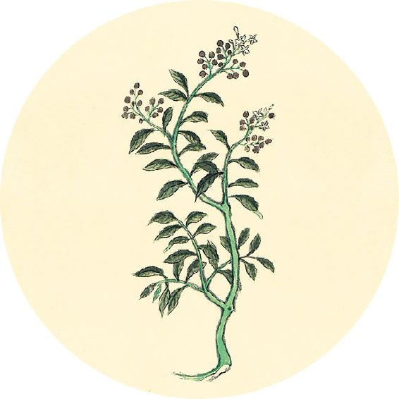
健康提示
千古名方：甘麦大枣汤
原料：甘草9克、小麦（带麸皮）15克、大枣9个。
做法：煮汤。
功效：养心，安神，镇静，助眠，止虚汗，缓解精神紧张、焦虑和心理压力，调理抑郁症、更年期综合征、帕金森病、抽动症、儿童多动症。
这个方子里用到了麦麸的功效。麦麸可以给人体补充B族维生素，对皮肤和神经系统有营养作用。秋冬季节常喝，人也会睡得特别舒服。
刺针必肃，刺肿摇针，经刺勿摇，此刺之道也。
——黄帝内经·素问·诊要经终论
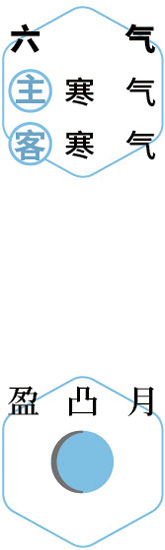
问雪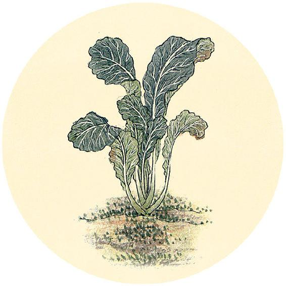
食材准备
周二进入冬至节气。
1. 参芪补心养阳汤（羊汤版）
原料：党参、黄芪、甘草、当归、陈皮、生姜、大枣、甘蔗或牛蒡、羊肉、胡椒粉。
2. 银耳羹
原料：银耳、桂圆、百合、枸杞等。
3. 冬季补品
原料：墨鱼、山茱萸。
4. 辛丑岁六气保健方：参芪补心养阳汤（从小雪吃到明年大寒前日，做法见11月30日）
5. 鱼腥草（雾霾地区）
6. 三九灸或三九贴
材料：艾条、艾柱或艾灸贴。
【释义】针刺时，进针应该敏捷；如刺脓肿，可用摇针手法；如刺经脉，就不要摇针，这是针刺的要点。
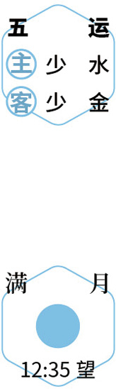
居家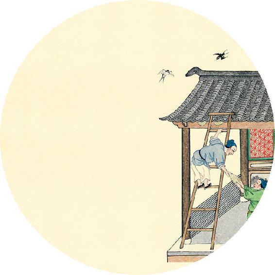
健康提示
冬至前一日为“离日”（关于“离日”的解释见9月22日），这个周末宜在家静养，不要劳累。
节气总结备
银耳羹________次 莲杞顺时粥________次
墨鱼________次 山茱萸________次
参芪补心养阳汤________次
身体哪些方面有改善_________________________
我给自己的冬季前半阶段（立冬到冬至前）养生功课打________分
太阳之脉，其终也戴眼，反折瘈瘲（chì zòng），其色白，绝汗乃出，出则死矣。
——黄帝内经·素问·诊要经终论
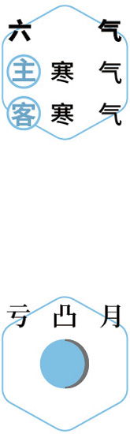
早睡